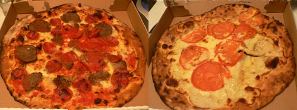

John’s of Bleecker Street
John’s of Bleecker Street
I didn’t end up going to the bacon and beer tasting last night; I had no one to go with, and the timing and location were too inconvenient to Emily’s Lost season premiere party.
But I did have my first taste of pizza from the famous John’s of Bleecker Street. They actually have a celebrities tab on their website between the “brick oven” and “photos” tab. Cerleberties, according to the URL.

That’s a pepperoni-meatball on the left and a white with tomatoes on the right. Apart from being slightly dry, the flavor was good, and the crust was excellent. I managed to eat four pieces and get a tummy ache.
I was surprised to read slice report that “John’s produces pizza that’s downright depressing: sauce without spice, cheese without charm, even a coal-fired crust without char. Each pie was so dry, all of us wondered if they had run out of olive oil that night.” Everyone raves about this place. I am withholding final judgment until I eat in the restaurant. A good crust carries pizza for me, and it’s what I always remember.
Comments
The pizza at John’s is not as dry when you eat in the restaurant—however, the lines to get in are ridiculously long and you sometimes wait an hour on the sidewalk!
I believe pizza sauce should be without spice. It should taste A LOT like a tomato, only more so, and not a lot like anything else.
How funny is the name Epifurious? I’m dying reading that blog. Thanks for the link in the past post.
I’m with zp, pizza sauce shouldn’t be highly seasoned; just maybe have a bit of basil in it. And what does slice mean, the pizza was so dry they wondered if the kitchen had run out of olive oil? Do they like their pizza oily,
Aaaah….I would love to have gone with you to a bacon/beer tasting event (what an interesting combo!)….a bit difficult though to get to NY from Pittsburgh on short notice….The pizza from John’s looks great! Not as good though as the pizza my husband and I had at Aiello’s (in Pgh) for lunch yesterday!
Mmmm, Aiello’s! The pizza places on lower Murray Avenue are so funny, with their ugly, delicious pies. Our family always argued over which was better, Mineo’s or Aiello’s (I prefer the latter, Poppy swears by the former).
Yes, Uncle Teddy, I’ve seen those lines, and I have no intention of standing in one. I’m afraid it’s a Magnolia bakery situation, albeit with a much better product.
Mom: I guess slice got told!
zp: Epifurious is pleased with their own name and with the fact that you enjoy it. Thanks for encouraging them!
Add a comment